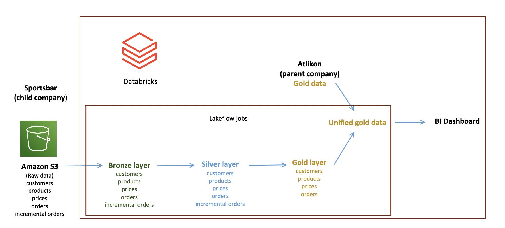
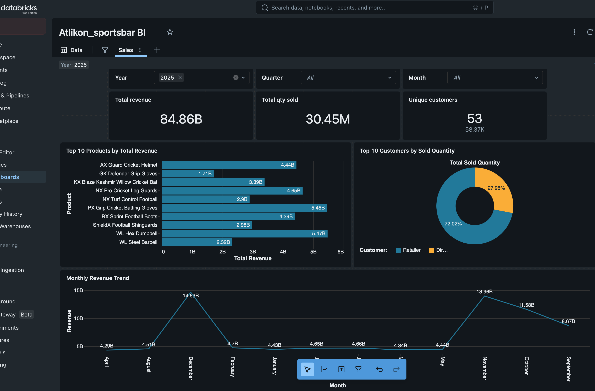
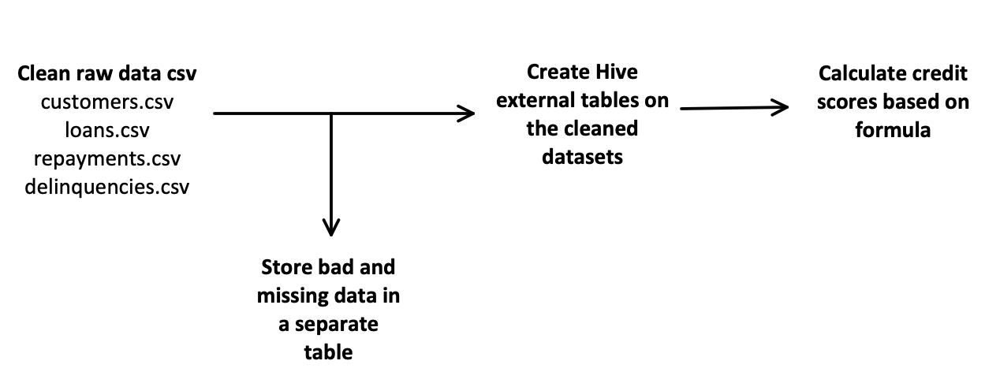
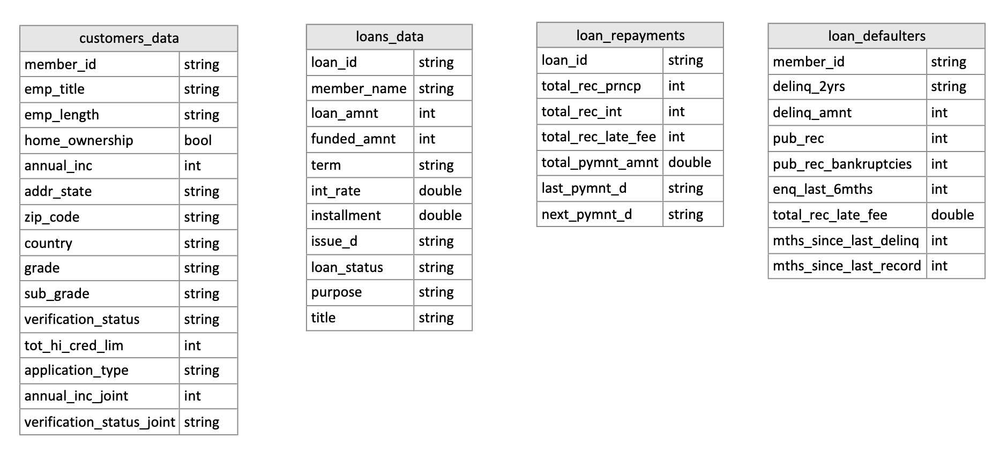

ELT PIPELINE - AUTOMATED SALES DATA INTEGRATION
- Skills: ADLS Gen 2, Amazon S3, AzureSQL, Azure Data Factory, Azure Databricks, PySpark
- Ingested daily sales dataset (csv) from Amazon S3 into ADLS Gen 2
- The new data is validated, cleaned and integrated into the Data Lake (ADLS)
- The data is analysed for business insights
- Automated this process with Azure Data Factory pipelines and Databricks notebook


ETL PIPELINE FOR DATA INTEGRATION AND ANALYSIS, POST COMPANY ACQUISITION
- Skills: Databricks, AWS S3, PySpark, SQL
- Ingested datasets (csv) from parent and child companies from S3 to Databricks
- Cleaned and integrated the datasets from the companies
- Created a Databricks dashboard with business insights
- Created a Databricks pipeline for incremental sales data in the future


CREDIT SCORING PIPELINE BUILT ON CREDIT UNION’S CUSTOMER DATA (ON PREMISE)
- Skills: PySpark, SQL, Hive, ETL
- Ingested customer datasets (csv)
- Cleaned and prepared the datasets, created Hive tables for downstream access and analytics
- Calculated credit scores based on multiple columns
MECHATRONIC SOCCER PENALTY KICK SHOOTER
- Skills: C, Data Engineering
- The objective is for a ‘player’ dummy to shoot a soccer ball towards a ‘target’ with varying position
- The IR sensor’s and motor’s data is ingested and processed, to calculate the angle and distance to the target
- The orientation and ‘kick’ of the player dummy is carried out by stepper and servo motors
- Programmed on Arduino using C